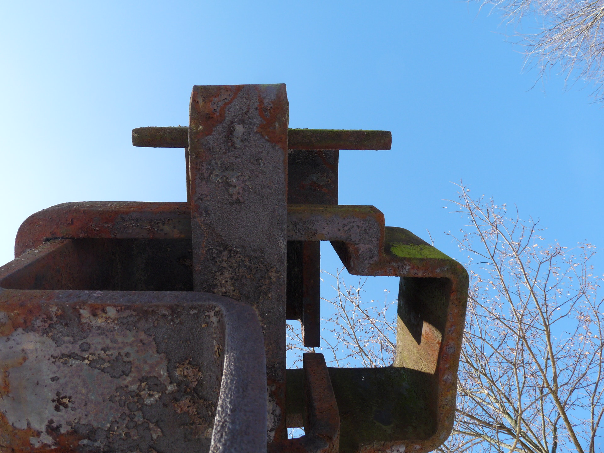

Vorher
Nachher
Das Anfansprodukt ist schräg. Der Hintergrund ist aber schon verschwommen, was das Objekt an sich schon in dern Vordergrund stellt.
Ich habe das ganze Bild zugeschnitten und es komplett heller gmacht. Zudem habe ich den Hintergrund noch mehr verschwommen, damit das Objekt sich deutlicher abhebt. Zudem habe ich den Kontrast erhöht.
Der Fokus ist schon im Anfangsprodukt schön gesetzt und das Bild ist gerade. Jedoch ist der Rosmarinhalm ein bisschen dunkel.
Ich habe den Rosmarinhalm heller gemacht und den Kontrast nur auf dem Halm erhöht.
Das Blatt ist hier schonn im Vordergrund, jedoch ist das ganze Bild ein bisschen blass.
Hier habe ich den Kontrast erhöht und die Farben intesiviert, um das Bild im ganzen weniger blass erscheinen zu lassen.

Ich finde dieses Bild gelungen, da es von einer sehr speziellen Perspektive geschossen wurde. In einem nächsten Versuch sollte ich jedoch ein etwas weniger flächedeckendes Objekt wählen, welches einfach ins Auge fällt.
Dieses Bild gefällt mir sehr, da es sehr simpel ist. Zudem bringt es eine gewissw Verwirrung mit sich, da man nicht von Anfang an weiss, wo oben und wo unden ist. Jedoch fehlt auch hier das einfache Objekt, welches als erstes ins Auge sticht.
Dieses Bild hat ein eindeutiges Objekt, jedoch stört mich der Schneeblock auf der rechtens Seite, da es das Bild aus dem Gleichgewicht bringt.
Dieses Bild ist aus meiner Sicht super im Gleichgewicht. Jedoch ist es nicht ganz gerade, was mich stört.
Hier fehlt wieder das eindeutige Objekt. Was ich aber gut finde, ist wieder, dass es eine gewisse Verwirrtheit mitsich bringt, da der Spiegel fremde Sachen spiegelt.
Ich mag die Perspektive dieses Bildes, da es durch ein Loch in einer Eisschicht geschossen wurde. Die Brücke ist hier das Objekt, welche so sehr schön inst Auge fällt. Jedoch ist auch dieses Bild nicht gerade.